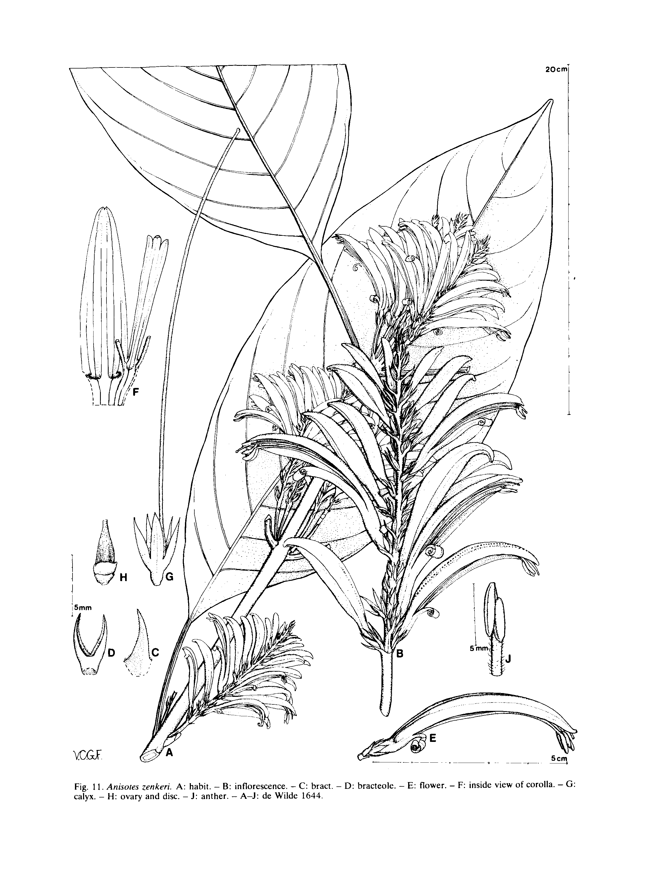
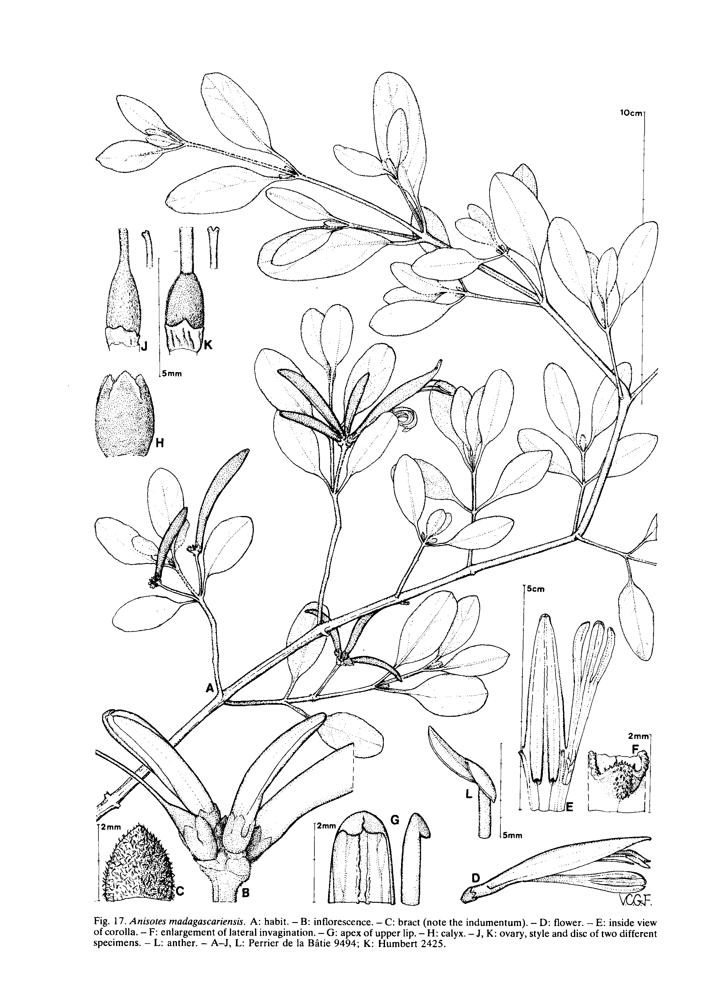
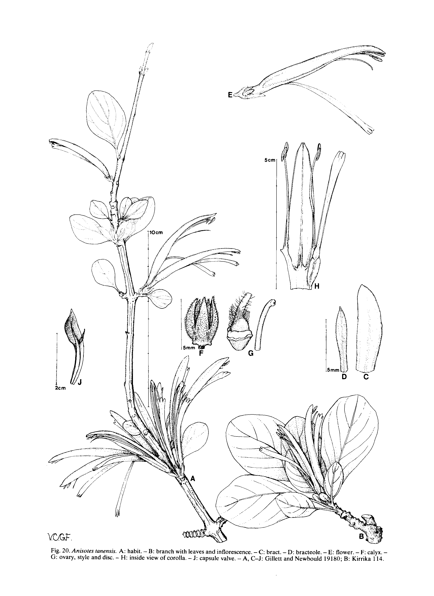
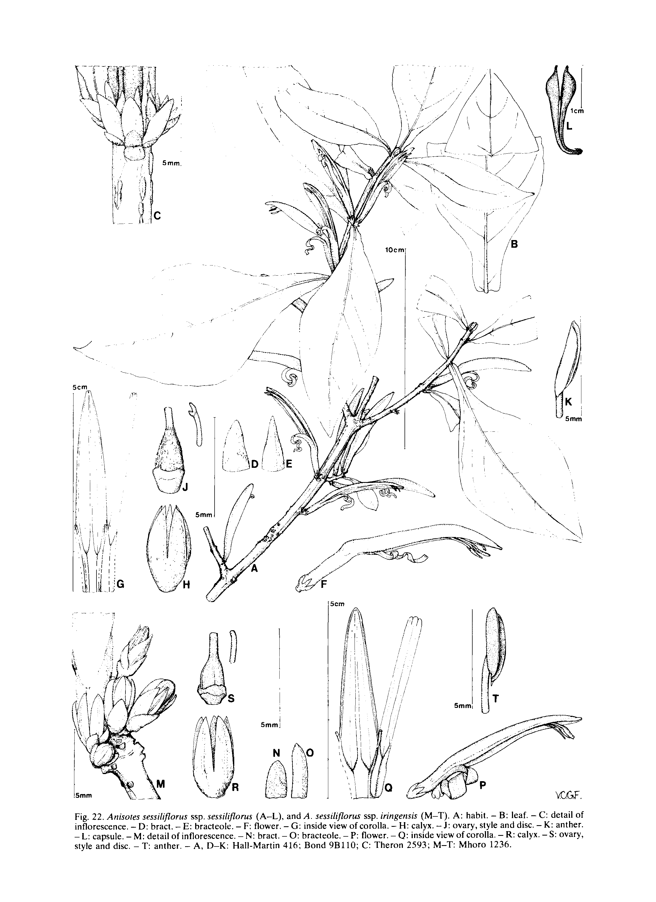

Nordic Journal of Botany 1 January 1981 1(1): 35-36
New taxa in Anisotes (Acanthaceae)
Baden, Claus
Abstract
Diagnoses of three new species and three new subspecies of Anisotes are presented together with those of six subgeneric taxa.
Full text
Full text is available as a scanned copy of the original print version.
Get a printable copy (PDF file) of the
complete article , or click on a page image below to browse page by page.
Links are also available for
Selected References .
Images in this article

Fig. 11 Anisores zenkeri. A: habit. - B: inflorescence. - C: bract. - D: bracteole. - E: flower. - F: inside view of corolla. - G: calyx. - H: ovary and disc. - J: anther. - A-J: de Wilde 1644.
Fig. 17 Anisotes madaguscuriensis. A: habit. - B: inflorescence. - C: bract (note the indumentum). - D: flower. - E: inside view of corolla. - F: enlargement of lateral invagination. - G: apex of upper lip. - H: calyx. - J, K: ovary, style and disc of two different specimens. - L: anther. - A-J, L: Perrier de la Bltie 9494; K: Humbert 2425.
Fig. 20 Anisoies fanensis. A: habit. - B: branch with leaves and inflorescence. - C: bract. - D: bracteole. - E: flower. - F: calyx. - G: ovary, style and disc. - H: inside view of corolla. - J: capsule valve. - A , C-J: Gillett and Newhould 19180; B: Kirrika 114.
Fig. 22 Anisofes sessiliflorus ssp. sessiliflorus (A-L), and A. sessiliflorus ssp. iringensis (M-T). A: habit. - B: leaf. - C: detail of inflorescence. - D: bract. - E: bracteole. - F: flower. - G: inside view of corolla. - H: calyx. - J : ovary, style and disc. - K: anther. - L: capsule. - M: detail of inflorescence. - N: bract. - 0: bracteole. - P: flower. - Q: inside view of corolla. - R: calyx. - S : ovary, style and disc. - T: anther. - A, D-K: Hall-Martin 416; Bond 9B110; C: Theron 2593; M-T: Mhoro 1236.Selected references